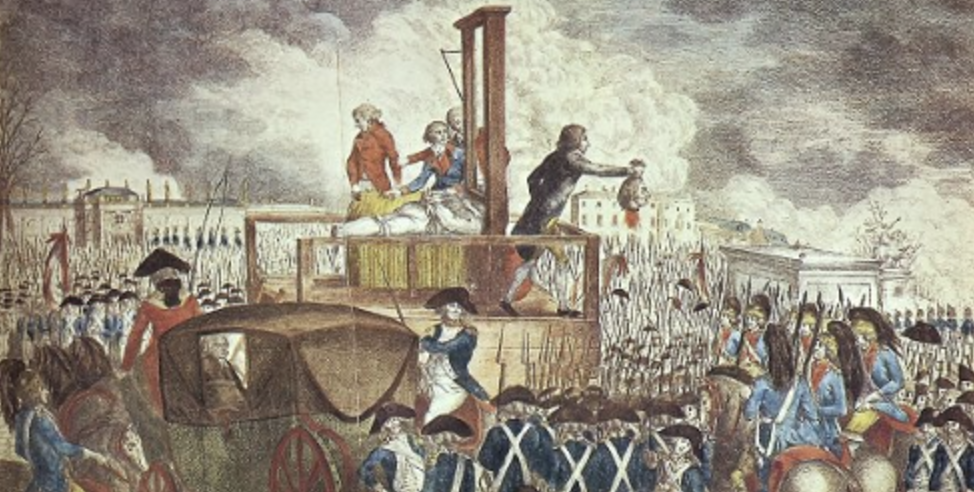

Fitness Tips
Eat as much fruit as you want. Cardio is great for burning calories quickly. Lifting weights, on the other hand, boosts your metabolism long-term. Peanut Butter is not a high-protein snack. Eggs Are a Superfood. Exercise is the Best Antidepressant. The news is a depressant. Breakfast is Not the Most Important Meal. Most people eat due to boredom, thirst, or stress. Protein is highly satiating and can help prevent overeating. Eat 1 gram protein per lb of your target bodyweight.
Pre Revolution France

Revolutions arise when elites hold onto power for only so long before the people push back. Before the French Revolution, France was divided into three estates: the clergy/government, the nobility/elites, and the peasants/working class.
By the late 1700s, France faced severe economic problems, including massive national debt. Much of this was caused by costly wars and the extravagant spending of King Louis XVI and Queen Marie Antoinette. Inflation soared, and widespread hunger gripped the nation.
In 1789, the French working class took a bold step, declaring itself the National Assembly, bypassing the king and elites to represent the people of France.
Fast forward to today, and America’s circumstances bear an eerie resemblance to pre-revolutionary France.
We too have our own three estates: the government, corporate board members, and the working class. Just like in France, the government and corporate elites reap the benefits while the working class endures the brunt of taxation and economic hardship.
For decades, government officials and defense contractors have profited from endless wars in Iraq, Afghanistan, Ukraine, and Israel, while here at home, homelessness and poverty expand across every major city. Meanwhile, the United States faces an enormous $35 trillion national debt.
Symbolism
Symbols can inspire and motivate us to pursue our goals and dreams by reminding us of what we want to achieve and why it's important to us. Symbols can also serve as a source of strength and resilience during difficult times, reminding us of the values and beliefs that are most important to us.
Inanimate objects can become imbued with meaning and significance when we associate them with important people, places, or events in our lives. They can serve as a tangible reminder of our memories, emotions, and experiences, and help us feel connected to our past.
Oligarchy
An oligarchy is a form of government where power is concentrated in the hands of a small group, typically from a particular social or economic class.
If you asked most people what kind of government we have in the United States, they would probably say "representative democracy."
But is that really the case?
Let’s consider a few examples. The Food and Drug Administration (FDA), funded by taxpayer dollars, employs 15-20 top executives who each earn over $200,000 annually to ensure our food and drugs are safe. Yet, 6 out of 10 Americans suffer from chronic diseases.
Many of these FDA executives eventually leave their positions to sit on the advisory boards of food and pharmaceutical companies, where they are compensated between $250,000 and $400,000. This glaring conflict of interest is not unique to the FDA—similar patterns can be seen across other U.S. agencies. Executives from the Pentagon, for instance, often transition to defense contractors' boards after overseeing the purchase of weapons from those same companies.
And who’s footing the bill for all of this? The American taxpayer.
Sounds like an oligarchy to me.
War Is Meant To Keep Resources Scarce
Have you ever wondered why, in a world with such advanced technology and abundant resources, so many still live in poverty? War is often a tool for the destruction of resources, creating artificial scarcity. It helps ensure that those in power remain wealthy, while keeping others impoverished.